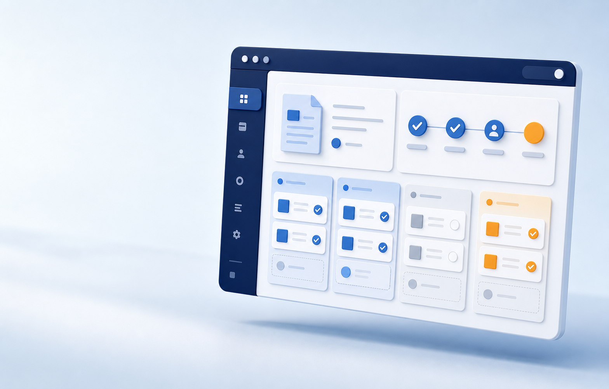

担当者が分からない
誰が確認中なのか、次は誰に渡るのか。状況確認のための連絡が増えてしまう。

メール、チャット、表計算。便利な道具が増えるほど、仕事の入口と出口が見えにくくなることがあります。
誰が確認中なのか、次は誰に渡るのか。状況確認のための連絡が増えてしまう。
似た名前のファイルが点在し、正しい書類を探すところから作業が始まってしまう。
判断の経緯が個人の受信箱に残り、担当変更のたびに確認をやり直してしまう。
依頼ごとに担当、期限、確認項目をまとめます。新しい道具を増やすことが目的ではなく、迷っている時間を減らし、本来の判断に集中できる状態をつくります。
いきなり全社を変えるのではなく、確認が多いひとつの業務を選び、運用に合う形を確かめます。
書類の流れ、関わる人、いま困っている場面を整理します。
ひとつの業務で確認ルートをつくり、実際のチームで試します。
使い方を確認しながら、必要な部署や業務へ段階的に広げます。
サービスを売る前に、
「自社にも使えそう」が分かるLPへ。
機能の羅列ではなく、課題 → 解決イメージ → 導入方法 → 相談の順で検討を助ける構成例です。
はい、という想定の作例です。実際のサービスLPでは、相談範囲や事前準備の有無を事実に合わせて明記します。
導入単位や試用条件を確認し、誤解のない範囲で具体的な開始方法を掲載します。
比較対象をむやみに否定せず、対象業務・支援範囲・運用方法など、選ぶための違いを整理して示します。
自社に合うかを一緒に整理する、初回相談の想定CTAです。
無料相談を申し込む →